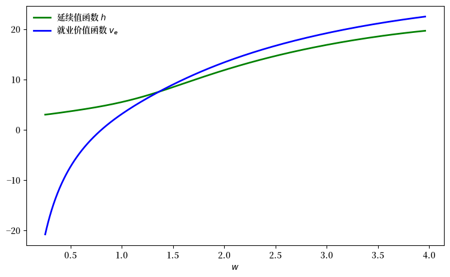
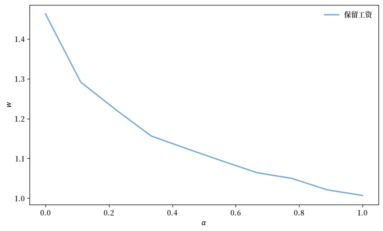
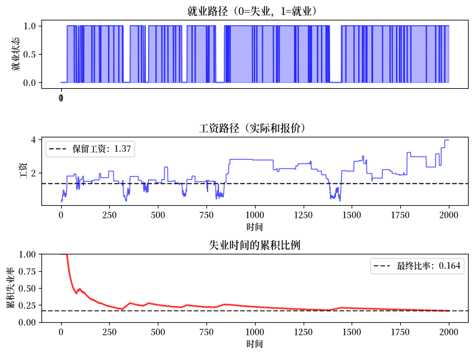
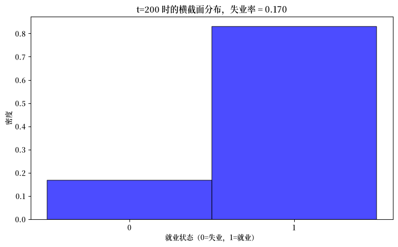
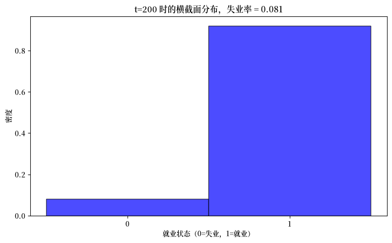
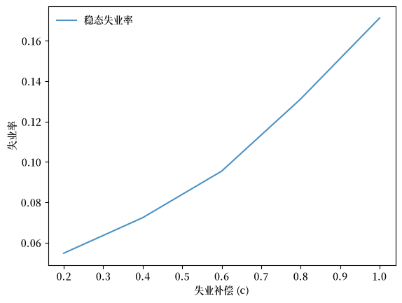

55. 工作搜寻 III：带分离和马尔可夫工资的搜寻#
GPU
本讲座是在配有GPU的机器上构建的——不过没有GPU也可以运行。
Google Colab 提供带GPU的免费套餐，使用方法如下：
点击右上角的”播放”图标
选择 Colab
将运行时环境设置为包含GPU
本讲座建立在上一讲中提出的带分离的工作搜寻模型之上。
关键区别在于，工资报价现在遵循马尔可夫链，而不是独立同分布（IID）。
这一修改为工资报价过程增加了持续性，这意味着今天的工资报价提供了关于明天报价的信息。
这一特征使模型更加真实，因为劳动力市场条件往往随时间表现出序列相关性。
除了 Anaconda 中已有的内容外，本讲座还需要以下库
!pip install quantecon jax
我们使用以下导入：
from quantecon.markov import tauchen
import jax.numpy as jnp
import jax
from jax import lax
from typing import NamedTuple
import matplotlib.pyplot as plt
from functools import partial
import matplotlib as mpl # i18n
FONTPATH = "fonts/SourceHanSerifSC-SemiBold.otf" # i18n
mpl.font_manager.fontManager.addfont(FONTPATH) # i18n
mpl.rcParams['font.family'] = ['Source Han Serif SC'] # i18n
55.1. 模型设置#
设定如下：
每个失业的个体从一个有限集合 \(\mathbb W\) 中获得一个工资报价 \(w\)
工资报价遵循一个转移矩阵为 \(P\) 的马尔可夫链
工作每期以概率 \(\alpha\) 终止（分离率）
失业工人每期获得补偿 \(c\)
未来收益以因子 \(\beta \in (0,1)\) 贴现
55.1.1. 决策问题#
当失业并收到工资报价 \(w\) 时，个体在以下两者之间选择：
接受报价 \(w\)：以工资 \(w\) 就业
拒绝报价：保持失业，获得 \(c\)，下一期得到新报价
工资更新如下：
如果一个失业个体拒绝了报价 \(w\)，那么他们的下一个报价从 \(P(w, \cdot)\) 中抽取
如果一个就业个体失去了一份工资为 \(w\) 的工作，那么他们的下一个报价从 \(P(w, \cdot)\) 中抽取
55.1.2. 工资报价过程#
为了构造工资报价过程，我们从一个 AR1 过程开始。
其中 \(\{Z_t\}\) 是独立同分布的标准正态分布。
下面我们将始终选择 \(\rho \in (0, 1)\)。
这意味着工资过程将是正相关的：当前工资报价越高，我们明天获得高报价的可能性就越大。
为了从 AR1 过程转换到工资报价过程，我们设 \(W_t = \exp(X_t)\)。
实际上，在实践中，我们按如下方式近似这个工资过程：
使用Tauchen 方法离散化 AR1 过程，以及
取所得工资报价值的指数。
55.1.3. 价值函数#
我们令
\(v_u(w)\) 为当前工资报价为 \(w\) 时失业的价值
\(v_e(w)\) 为以工资 \(w\) 就业的价值
贝尔曼方程是独立同分布情形的显然修改。
唯一的变化是，下一期的期望是使用以当前工资 \(w\) 为条件的转移矩阵 \(P\) 计算的，而不是从 \(q\) 中独立抽取。
失业工人的价值函数满足贝尔曼方程
就业工人的价值函数满足贝尔曼方程
作为一种记号约定，给定一个将值赋给工资的函数 \(h\)，通常设
（为了理解这个表达式，把 \(P\) 想象成一个矩阵，\(h\) 想象成一个列向量，\(w\) 想象成一个行索引。）
有了这个记号，贝尔曼方程变为
以及
55.1.4. 最优策略#
一旦我们有了这些贝尔曼方程的解 \(v_e\) 和 \(v_u\)，我们就可以计算最优策略：如果满足下式，则以当前工资报价 \(w\) 接受
最优策略被证明是一个保留工资策略：接受所有高于某个阈值的工资。
55.2. 代码#
现在让我们实现这个模型。
55.2.1. 设置#
默认效用函数是一个 CRRA 效用函数
def u(x, γ):
return (x**(1 - γ) - 1) / (1 - γ)
让我们设置一个 Model 类来存储求解模型所需的信息。
我们包含 P_cumsum，即转移矩阵的按行累积和，以优化模拟——细节将在下面解释。
class Model(NamedTuple):
n: int
w_vals: jnp.ndarray
P: jnp.ndarray
P_cumsum: jnp.ndarray
β: float
c: float
α: float
γ: float
下一个函数保存默认值并创建一个 Model 实例：
def create_js_with_sep_model(
n: int = 200, # 工资网格大小
ρ: float = 0.9, # 工资持续性
ν: float = 0.2, # 工资波动率
β: float = 0.96, # 贴现因子
α: float = 0.05, # 分离率
c: float = 1.0, # 失业补偿
γ: float = 1.5 # 效用参数
) -> Model:
"""
创建一个带分离的工作搜寻模型实例。
"""
mc = tauchen(n, ρ, ν)
w_vals, P = jnp.exp(jnp.array(mc.state_values)), jnp.array(mc.P)
P_cumsum = jnp.cumsum(P, axis=1)
return Model(n, w_vals, P, P_cumsum, β, c, α, γ)
55.2.2. 求解：第一遍#
让我们组装一个（不太高效的）例程来计算保留工资。
（我们将在下面仔细考虑效率问题。）
它的工作方式是从 \(v_e\) 和 \(v_u\) 的猜测开始，然后迭代至收敛。
以下是分别更新 \(v_u\) 和 \(v_e\) 的贝尔曼算子。
def T_u(model, v_u, v_e):
"""
应用失业贝尔曼更新规则并返回 v_u 的新猜测。
"""
n, w_vals, P, P_cumsum, β, c, α, γ = model
h = u(c, γ) + β * P @ v_u
v_u_new = jnp.maximum(v_e, h)
return v_u_new
def T_e(model, v_u, v_e):
"""
应用就业贝尔曼更新规则并返回 v_e 的新猜测。
"""
n, w_vals, P, P_cumsum, β, c, α, γ = model
v_e_new = u(w_vals, γ) + β * ((1 - α) * v_e + α * P @ v_u)
return v_e_new
这里是一个迭代至收敛然后计算保留工资的例程。
def solve_model_first_pass(
model: Model, # 包含默认参数的实例
v_u_init: jnp.ndarray, # v_u 的初始条件
v_e_init: jnp.ndarray, # v_e 的初始条件
tol: float=1e-6, # 误差容限
max_iter: int=1_000, # 循环的最大迭代次数
):
n, w_vals, P, P_cumsum, β, c, α, γ = model
i = 0
error = tol + 1
v_u = v_u_init
v_e = v_e_init
while i < max_iter and error > tol:
v_u_next = T_u(model, v_u, v_e)
v_e_next = T_e(model, v_u, v_e)
error_u = jnp.max(jnp.abs(v_u_next - v_u))
error_e = jnp.max(jnp.abs(v_e_next - v_e))
error = jnp.maximum(error_u, error_e)
v_u = v_u_next
v_e = v_e_next
i += 1
# 计算接受和拒绝值
continuation_values = u(c, γ) + β * P @ v_u
# 找到接受变为最优的位置
accept_indices = v_e >= continuation_values
first_accept_idx = jnp.argmax(accept_indices) # 第一个 True 的索引
# 如果没有接受（全为 False），返回无穷大
# 否则返回第一个接受索引处的工资
w_bar = jnp.where(
jnp.any(accept_indices), w_vals[first_accept_idx], jnp.inf
)
return v_u, v_e, w_bar
55.2.3. 实地测试#
让我们求解这个模型：
model = create_js_with_sep_model()
n, w_vals, P, P_cumsum, β, c, α, γ = model
v_u_init = jnp.zeros(n)
v_e_init = jnp.zeros(n)
v_u, v_e, w_bar_first = solve_model_first_pass(model, v_u_init, v_e_init)
接下来我们计算延续值。
h = u(c, γ) + β * P @ v_u
让我们绘制结果。
fig, ax = plt.subplots(figsize=(9, 5.2))
ax.plot(w_vals, h, 'g-', linewidth=2,
label="延续值函数 $h$")
ax.plot(w_vals, v_e, 'b-', linewidth=2,
label="就业价值函数 $v_e$")
ax.legend(frameon=False)
ax.set_xlabel(r"$w$")
plt.show()
findfont: Failed to find font weight normal, now using 600.
findfont: Failed to find font weight normal, now using 600.
保留工资位于 \(v_e\) 与延续值函数（即拒绝的价值）的交点处。
55.3. 提高效率#
上述求解方法工作得很好，但我们可以做得更好。
首先，我们使用就业工人的贝尔曼方程用 \(Pv_u\) 来表示 \(v_e\)
接下来我们代入失业个体的贝尔曼方程得到
然后我们使用价值函数迭代来求解 \(v_u\)。
有了 \(v_u\)，我们可以通过上面的方程恢复 \(v_e\)，然后计算保留工资。
以下是失业工人价值函数的新贝尔曼算子：
def T(v: jnp.ndarray, model: Model) -> jnp.ndarray:
"""
v_u 的贝尔曼算子。
"""
n, w_vals, P, P_cumsum, β, c, α, γ = model
d = 1 / (1 - β * (1 - α))
v_e = d * (u(w_vals, γ) + α * β * P @ v)
h = u(c, γ) + β * P @ v
return jnp.maximum(v_e, h)
这里是一个价值函数迭代的例程。
@jax.jit
def vfi(
model: Model,
tolerance: float = 1e-6, # 误差容限
max_iter: int = 100_000, # 最大迭代界限
):
v_init = jnp.zeros(model.w_vals.shape)
def cond(loop_state):
v, error, i = loop_state
return (error > tolerance) & (i <= max_iter)
def update(loop_state):
v, error, i = loop_state
v_new = T(v, model)
error = jnp.max(jnp.abs(v_new - v))
new_loop_state = v_new, error, i + 1
return new_loop_state
initial_state = (v_init, tolerance + 1, 1)
final_loop_state = lax.while_loop(cond, update, initial_state)
v_final, error, i = final_loop_state
return v_final
这里是一个从价值函数计算保留工资的例程。
@jax.jit
def get_reservation_wage(v: jnp.ndarray, model: Model) -> float:
"""
从失业个体的价值函数 v := v_u 计算保留工资。
保留工资是使得接受 (v_e(w)) 至少和拒绝 (u(c) + β(Pv_u)(w))
一样好的最低工资 w。
"""
n, w_vals, P, P_cumsum, β, c, α, γ = model
# 计算接受和拒绝值
d = 1 / (1 - β * (1 - α))
v_e = d * (u(w_vals, γ) + α * β * P @ v)
continuation_values = u(c, γ) + β * P @ v
# 找到接受变为最优的位置
accept_indices = v_e >= continuation_values
first_accept_idx = jnp.argmax(accept_indices) # 第一个 True 的索引
# 如果没有接受（全为 False），返回无穷大
# 否则返回第一个接受索引处的工资
return jnp.where(jnp.any(accept_indices), w_vals[first_accept_idx], jnp.inf)
让我们使用新方法求解模型：
model = create_js_with_sep_model()
n, w_vals, P, P_cumsum, β, c, α, γ = model
v_u = vfi(model)
w_bar = get_reservation_wage(v_u, model)
让我们验证两种方法产生相同的保留工资：
print(f"Reservation wage (first method): {w_bar_first:.6f}")
print(f"Reservation wage (second method): {w_bar:.6f}")
print(f"Difference: {abs(w_bar - w_bar_first):.2e}")
Reservation wage (first method): 1.365155
Reservation wage (second method): 1.365155
Difference: 0.00e+00
接下来我们计算一些用于绘图的相关量。
d = 1 / (1 - β * (1 - α))
v_e = d * (u(w_vals, γ) + α * β * P @ v_u)
h = u(c, γ) + β * P @ v_u
让我们绘制结果。
fig, ax = plt.subplots(figsize=(9, 5.2))
ax.plot(w_vals, h, 'g-', linewidth=2,
label="延续值函数 $h$")
ax.plot(w_vals, v_e, 'b-', linewidth=2,
label="就业价值函数 $v_e$")
ax.legend(frameon=False)
ax.set_xlabel(r"$w$")
plt.show()

结果与之前相同，但我们只在一个数组上迭代——而且我们的 JAX 代码也更高效。
55.4. 敏感性分析#
让我们检查保留工资如何随分离率变化。
α_vals: jnp.ndarray = jnp.linspace(0.0, 1.0, 10)
w_bar_vec = []
for α in α_vals:
model = create_js_with_sep_model(α=α)
v_u = vfi(model)
w_bar = get_reservation_wage(v_u, model)
w_bar_vec.append(w_bar)
fig, ax = plt.subplots(figsize=(9, 5.2))
ax.plot(
α_vals, w_bar_vec, linewidth=2, alpha=0.6, label="保留工资"
)
ax.legend(frameon=False)
ax.set_xlabel(r"$\alpha$")
ax.set_ylabel(r"$w$")
plt.show()

你能为你在这幅图中看到的结果提供一个直观的经济学故事吗？
55.5. 就业模拟#
现在让我们模拟单个个体在最优策略下的就业动态。
请注意，当模拟工资报价的马尔可夫链时，我们需要多次从 \(P\) 的每一行的分布中抽取。
为此，我们使用逆变换法：抽取一个均匀随机变量并找到它落在累积分布中的位置。
这通过在预先计算的累积和 P_cumsum 上使用 jnp.searchsorted 来实现，这比每次重新计算累积和要快得多。
函数 update_agent 将个体的状态推进一期。
个体的状态是一个对 \((S_t, W_t)\)，其中 \(S_t\) 是就业状态（0 表示失业，1 表示就业），\(W_t\) 是
他们当前的工资报价（如果失业），或
他们当前的工资（如果就业）。
def update_agent(key, status, wage_idx, model, w_bar):
"""
更新个体的就业状态和当前工资。
参数：
- key: JAX 随机密钥
- status: 当前就业状态（0 或 1）
- wage_idx: 当前工资，记录为数组索引
- model: Model 实例
- w_bar: 保留工资
"""
n, w_vals, P, P_cumsum, β, c, α, γ = model
key1, key2 = jax.random.split(key)
# 使用预先计算的累积和通过逆变换法
# 进行高效抽样。
new_wage_idx = jnp.searchsorted(
P_cumsum[wage_idx, :], jax.random.uniform(key1)
)
separation_occurs = jax.random.uniform(key2) < α
# 如果当前工资达到或超过保留工资则接受
accepts = w_vals[wage_idx] >= w_bar
# 如果就业：无分离则 status = 1，有分离则 status = 0
# 如果失业：接受则 status = 1，拒绝则 status = 0
next_status = jnp.where(
status,
1 - separation_occurs.astype(jnp.int32), # 就业路径
accepts.astype(jnp.int32) # 失业路径
)
# 如果就业：无分离则工资 = 当前，有分离则工资 = 新的
# 如果失业：接受则工资 = 当前，拒绝则工资 = 新的
next_wage = jnp.where(
status,
jnp.where(separation_occurs, new_wage_idx, wage_idx), # 就业路径
jnp.where(accepts, wage_idx, new_wage_idx) # 失业路径
)
return next_status, next_wage
这里是一个模拟单个个体就业路径的函数。
def simulate_employment_path(
model: Model, # 模型细节
w_bar: float, # 保留工资
T: int = 2_000, # 模拟长度
seed: int = 42 # 为模拟设置种子
):
"""
从失业开始模拟 T 期的就业路径。
"""
key = jax.random.PRNGKey(seed)
# 解包模型
n, w_vals, P, P_cumsum, β, c, α, γ = model
# 初始条件
status = 0
wage_idx = 0
wage_path = []
status_path = []
for t in range(T):
wage_path.append(w_vals[wage_idx])
status_path.append(status)
key, subkey = jax.random.split(key)
status, wage_idx = update_agent(
subkey, status, wage_idx, model, w_bar
)
return jnp.array(wage_path), jnp.array(status_path)
让我们创建一个就业模拟的综合图：
model = create_js_with_sep_model()
# 计算用于绘图的保留工资
v_u = vfi(model)
w_bar = get_reservation_wage(v_u, model)
wage_path, employment_status = simulate_employment_path(model, w_bar)
fig, (ax1, ax2, ax3) = plt.subplots(3, 1, figsize=(8, 6))
# 绘制就业状态
ax1.plot(employment_status, 'b-', alpha=0.7, linewidth=1)
ax1.fill_between(
range(len(employment_status)), employment_status, alpha=0.3, color='blue'
)
ax1.set_ylabel('就业状态')
ax1.set_title('就业路径（0=失业，1=就业）')
ax1.set_xticks((0, 1))
ax1.set_ylim(-0.1, 1.1)
# 绘制带就业状态着色的工资路径
ax2.plot(wage_path, 'b-', alpha=0.7, linewidth=1)
ax2.axhline(y=w_bar, color='black', linestyle='--', alpha=0.8,
label=f'保留工资：{w_bar:.2f}')
ax2.set_xlabel('时间')
ax2.set_ylabel('工资')
ax2.set_title('工资路径（实际和报价）')
ax2.legend()
# 绘制失业时间的累积比例
unemployed_indicator = (employment_status == 0).astype(int)
cumulative_unemployment = (
jnp.cumsum(unemployed_indicator) /
jnp.arange(1, len(employment_status) + 1)
)
ax3.plot(cumulative_unemployment, 'r-', alpha=0.8, linewidth=2)
ax3.axhline(y=jnp.mean(unemployed_indicator), color='black',
linestyle='--', alpha=0.7,
label=f'最终比率：{jnp.mean(unemployed_indicator):.3f}')
ax3.set_xlabel('时间')
ax3.set_ylabel('累积失业率')
ax3.set_title('失业时间的累积比例')
ax3.legend()
ax3.set_ylim(0, 1)
plt.tight_layout()
plt.show()
findfont: Failed to find font weight normal, now using 600.

该模拟有助于可视化与此模型相关的结果。
个体遵循一个保留工资策略。
个体经常失去工作，然后立即以不同的工资接受另一份工作。
这是因为她使用上一份工作的工资 \(w\) 通过 \(P(w, \cdot)\) 抽取一个新的工资报价，而正相关意味着高的当前 \(w\) 往往导致高的新抽取值。
55.6. 遍历性#
下面我们检查横截面失业。
特别地，我们将查看横截面模拟中的失业率，并将其与时间平均失业率进行比较，后者是个体在很长时间序列中处于失业状态的时间比例。
我们将看到这两个值近似相等——事实上在极限情形下它们完全相等。
原因是过程 \((S_t, W_t)\)，其中
\(S_t\) 是就业状态，以及
\(W_t\) 是工资
是马尔可夫的，因为下一对仅取决于当前对和独立同分布的随机性，并且是遍历的。
遍历性作为不可约性的结果而成立。
事实上，从任何（状态，工资）对，一个个体最终都可以到达任何其他（状态，工资）对。
这成立是因为：
失业个体可以通过接受报价而就业
就业个体可以通过分离而失业（概率 \(\alpha\)）
工资过程可以在所有工资状态之间转移（因为 \(P\) 本身是不可约的）
这些性质确保了链是遍历的，并在状态 \((s, w)\) 上有唯一的平稳分布 \(\pi\)。
对于一个遍历马尔可夫链，遍历定理保证了时间平均 = 横截面平均。
特别地，单个个体处于失业状态的时间比例（跨所有工资状态）收敛到横截面失业率：
无论初始条件如何，这都成立——前提是我们对横截面分布进行预热（从给定的初始横截面向前推进，以消除该初始条件的影响）。
因此，我们可以通过以下方式研究稳态失业：
长时间跟踪一个个体（时间平均），或
在单个时间点观察许多个体（横截面平均）
对于我们的目的，第二种方法通常更好，因为它更容易并行化。
55.7. 横截面分析#
现在让我们同时模拟许多个体来检查横截面失业率。
为了高效地做到这一点，我们需要一种与上面定义的 simulate_employment_path 不同的方法。
关键区别在于：
simulate_employment_path记录单个个体的整个历史（所有 T 期），这对可视化有用但占用内存下面的新函数
sim_agent只跟踪并返回最终状态，这就是我们进行横截面统计所需的全部内容sim_agent使用lax.fori_loop而不是 Python 循环，使其可 JIT 编译并适用于跨许多个体的向量化
我们首先定义一个将单个个体向前模拟 T 个时间步的函数：
@jax.jit
def sim_agent(key, initial_status, initial_wage_idx, model, w_bar, T):
"""
使用 lax.fori_loop 将单个个体向前模拟 T 个时间步。
使用 fold_in 在每个时间步生成一个新的密钥。
参数：
- key: 此个体的 JAX 随机密钥
- initial_status: 初始就业状态（0 或 1）
- initial_wage_idx: 初始工资索引
- model: Model 实例
- w_bar: 保留工资
- T: 要模拟的时间期数
返回：
- final_status: T 期后的就业状态
- final_wage_idx: T 期后的工资索引
"""
def update(t, loop_state):
status, wage_idx = loop_state
step_key = jax.random.fold_in(key, t)
status, wage_idx = update_agent(step_key, status, wage_idx, model, w_bar)
return status, wage_idx
initial_loop_state = (initial_status, initial_wage_idx)
final_loop_state = lax.fori_loop(0, T, update, initial_loop_state)
final_status, final_wage_idx = final_loop_state
return final_status, final_wage_idx
# 创建 sim_agent 的向量化版本以并行处理多个个体
sim_agents_vmap = jax.vmap(sim_agent, in_axes=(0, 0, 0, None, None, None))
def simulate_cross_section(
model: Model, # 带参数的 Model 实例
n_agents: int = 100_000, # 要模拟的个体数
T: int = 200, # 预热长度
seed: int = 42 # 用于可重复性
) -> float:
"""
模拟个体横截面并返回失业率。
这种方法：
1. 生成 n_agents 个随机密钥
2. 为每个个体调用 sim_agent（通过 vmap 向量化）
3. 收集最终状态以产生横截面
返回横截面失业率。
"""
key = jax.random.PRNGKey(seed)
# 求解最优保留工资
v_u = vfi(model)
w_bar = get_reservation_wage(v_u, model)
# 初始化数组
initial_wage_indices = jnp.zeros(n_agents, dtype=jnp.int32)
initial_status_vec = jnp.zeros(n_agents, dtype=jnp.int32)
# 生成 n_agents 个随机密钥
agent_keys = jax.random.split(key, n_agents)
# 将每个个体向前模拟 T 步（向量化）
final_status, final_wage_idx = sim_agents_vmap(
agent_keys, initial_status_vec, initial_wage_indices, model, w_bar, T
)
unemployment_rate = 1 - jnp.mean(final_status)
return unemployment_rate
此函数生成一个显示许多个体间就业状态分布的直方图：
def plot_cross_sectional_unemployment(
model: Model,
t_snapshot: int = 200, # 横截面快照的时间
n_agents: int = 20_000 # 要模拟的个体数
):
"""
生成特定时间的横截面失业直方图。
"""
# 直接获取最终就业状态
key = jax.random.PRNGKey(42)
v_u = vfi(model)
w_bar = get_reservation_wage(v_u, model)
# 初始化数组
initial_wage_indices = jnp.zeros(n_agents, dtype=jnp.int32)
initial_status_vec = jnp.zeros(n_agents, dtype=jnp.int32)
# 生成 n_agents 个随机密钥
agent_keys = jax.random.split(key, n_agents)
# 将每个个体向前模拟 T 步（向量化）
final_status, _ = sim_agents_vmap(
agent_keys, initial_status_vec, initial_wage_indices, model, w_bar, t_snapshot
)
# 计算失业率
unemployment_rate = 1 - jnp.mean(final_status)
fig, ax = plt.subplots(figsize=(8, 5))
# 将直方图绘制为密度（条形之和为 1）
weights = jnp.ones_like(final_status) / len(final_status)
ax.hist(final_status, bins=[-0.5, 0.5, 1.5],
alpha=0.7, color='blue', edgecolor='black',
density=True, weights=weights)
ax.set_xlabel('就业状态（0=失业，1=就业）')
ax.set_ylabel('密度')
ax.set_title(f't={t_snapshot} 时的横截面分布，' +
f'失业率 = {unemployment_rate:.3f}')
ax.set_xticks([0, 1])
plt.tight_layout()
plt.show()
现在让我们比较时间平均失业率（来自单个个体的长时间模拟）与横截面失业率（来自单个时间点的许多个体）。
我们在上面声称，由于遍历性，这些数字在大样本中将近似相等。
让我们看看这是否属实。
model = create_js_with_sep_model()
cross_sectional_unemp = simulate_cross_section(
model, n_agents=20_000, T=200
)
time_avg_unemp = jnp.mean(unemployed_indicator)
print(f"Time-average unemployment rate (single agent): "
f"{time_avg_unemp:.4f}")
print(f"Cross-sectional unemployment rate (at t=200): "
f"{cross_sectional_unemp:.4f}")
print(f"Difference: {abs(time_avg_unemp - cross_sectional_unemp):.4f}")
Time-average unemployment rate (single agent): 0.1640
Cross-sectional unemployment rate (at t=200): 0.1696
Difference: 0.0056
确实，它们非常接近。
现在让我们可视化横截面分布：
plot_cross_sectional_unemployment(model)

55.8. 更低的失业补偿（c=0.5）#
当失业补偿更低时，横截面失业率会发生什么变化？
model_low_c = create_js_with_sep_model(c=0.5)
plot_cross_sectional_unemployment(model_low_c)

55.9. 练习#
练习 55.1
创建一幅图，更仔细地研究稳态横截面失业率如何随失业补偿变化。
尝试一系列失业补偿 c 的值，例如 c = 0.2, 0.4, 0.6, 0.8, 1.0。
对于每个值，计算稳态横截面失业率并将其对 c 作图。
你观察到失业补偿与失业率之间存在什么关系？
解答 练习 55.1
我们为不同的失业补偿值计算稳态失业率：
c_values = 1.0, 0.8, 0.6, 0.4, 0.2
rates = []
for c in c_values:
model = create_js_with_sep_model(c=c)
unemployment_rate = simulate_cross_section(model)
rates.append(unemployment_rate)
fig, ax = plt.subplots()
ax.plot(
c_values, rates, alpha=0.8,
linewidth=1.5, label='稳态失业率'
)
ax.set_xlabel('失业补偿 (c)')
ax.set_ylabel('失业率')
ax.legend(frameon=False)
plt.show()
